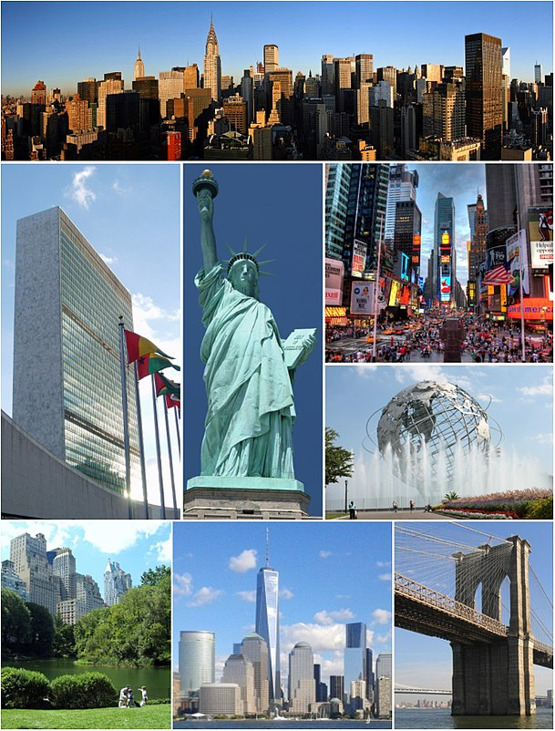
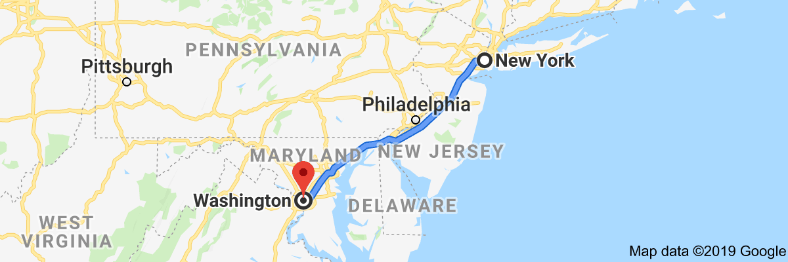
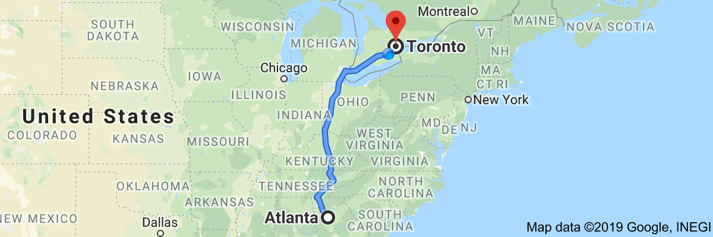

American Pie : Don McLean
Trip 2019
Toronto to New York City
Empire State of Mind : Jay Z and Alicia Keys
- Ontario
- New York
- Pennsylvania
- New Jersey
- New York
Tour of New York City
New York, New York : Frank Sinatra
- drive times square area
- stop and walk at Dakota Building
(john lennon's home) at
Central Park West and 72nd Street
- walk to Strawberry Fields / Imagine Mosaic
- walk to view luxury condominiums
(home of many celebrities)
- drive by Central Park Zoo
- drive by The Plaza hotel
- drive by Carnegie Hall
- drive around Rockefeller Center block
- drive by St Patrick's Cathedral
- drive by Rockefeller Center ice skating rink
- drive by Rockefeller Center christmas tree
- drive by Rockefeller NBC Today Show set
- drive by Madison Square Park
- drive by Flatiron Building
- drive by Met-Life Building
- drive by Empire State Building
- drive by Greenwich Village
- drive by Soho
- drive by Chinatown
- drive by Financial District
- drive by New York Stock Exchange (on Wall Street)
- drive by Federal Hall
- drive by Trinity Church
- drive by Charging Bull sculpture (on Broadway)
- stop / walk at 9/11 Memorial
(at World Trade Center site)
- walk grounds of Memorial
- walk waterfalls of "Reflecting Absence"
(footprints of the twin towers)
- walk by Survivor Tree
- drive by Pier 15 (maybe get on a boat cruise)
- drive view manhattan
- brooklyn skyline
- drive view Brooklyn Bridge
- drive view Manhattan Bridge
- drive view Williamsburg Bridge
- drive view Ellis Island
- drive view State of Liberty
- Maybe take ferry ride to Ellis Island
/ Statue of Liberty
New York City to Washington, DC

- New York
- New Jersey
- Pennsylvania
- Maryland
- Washington, DC
Tour of Washington, DC
The Washington Post March 1886
- Parking at Hains /
East Potomac Park (lots A, B, C)
- walk to Thomas Jefferson Memorial (toilets)
- walk to George Mason Memorial
- walk to FDR Memorial (toilets)
- walk to Martin Luther King, Jr Memorial (toilets)
- walk to DC War Memorial (toilets)
- walk to Korean War Veterans Memorial
- walk to Lincoln Memorial (toilets)
- walk to Einstein Memorial
- walk to Vietnam Veterans Memorial (toilets)
- walk to 56 Signers of Declaration of Independence Memorial
- walk to Constitution Gardens
- walk to World War II Memorial
- walk to DC War Memorial (toilets)
- walk to Washington Monument (toilets)
- walk around Ellipse (toilets)
- view White House from Ellipse
- walk to White House Visitor Center
- walk to National Aquarium
- walk to African American History Museum
- TOUR African American History Museum
(IF HAVE TICKET)
- walk to American History Museum
- TOUR American History Museum
- walk to Natural History Museum
- TOUR Natural History Museum
- walk to National Gallery Sculture Garden
- walk to National Gallery West Building
- TOUR National Gallery West Building
- walk to National Gallery East Building
- walk to Union Square
- walk to Capitol Reflecting Pool
- walk to Ulysses S. Grant Memorial
- walk to U.S. Capitol Visitor Center
- TOUR Capitol Visitor Center
- walk to west steps of U.S. Capitol
- walk to U.S. Botanic Garden
- walk to American Indian Museum
- walk to Air and Space Museum
- TOUR Air and Space Museum
- walk to Hirshhorn Museum
- walk to Arts and Industries
- walk to Smithsonian Castle
- TOUR Smithsonsian Castle
- walk to USDA Forest Service
- walk to U.S. Holocaust Memorial Museum
- walk to Bureau of Engineering and Printing
- Walk back to Parking
Air And Space Museum (priotiy 1)
- kitty hawk flyer
- apollo 11 command module
- charles lindbergh Spirit of St Louis
- moon rock you can touch
American History Museum (priority 2)
- collection of gowns from First Ladies
- Julia Child's kitchen
- one of the Muppets
- the actual Star Spangled Banner
Natural History Museum (priority 3)
- dinosaur at main fossil exhibity
- ancient mummies
- white rhino shot by Teddy Roosevelt
- Hope Diamond
National Museum of African American
History and Culture (priority 4)
- slavery exhibit
- underground railroad exhibit
- Jim Crow Era exhibity
- black american accomplishment exhibit
- segragation exhibit
- pop culture exhibit
Washington, DC to Atlanta
Georgia On My Mind : Ray Charles
- Washington, DC
- Virginia
- North Carolina
- South Carolina
- Georgia
Tour of Atlanta
Love Shack : The B-52's
- World of Coca Cola
- Centennial Olympic Park
Atlanta to Toronto
Jane : Barenaked Ladies
- Georgia
- Tennessee
- Kentucky
- Ohio
- Michigan
- Ontario
Podcasts
- ACooke: Washington DC to New York 27 NOV 2012 BBC Radio 4
- ACooke: New Orleans 20 NOV 2012 BBC Radio 4
- ACooke: From Pittsburgh to Chicago 13 NOV 2012 BBC Radio 4
- ACooke: Setting off from New York 06 NOV 2012 BBC Radio 4
- ExcessBag 28 Apr 12: The point and the pleasure of travel BBC Radio 4
- ExcessBag 07 Apr 12: Wildlife travel BBC Radio 4
- ExcessBag 24 Mar 12: Family travel BBC Radio 4
- ExcessBag 03 Mar 12: Medics abroad - Oscars BBC Radio 4
- ExcessBag 28 Jan 12: Mongolia - Wild West - Calgary Stampede BBC Radio 4
- ExcessBag31 Dec11: England BBC Radio 4
- ExcessBag10 Dec 11: Historic walks - Fast and slow trains BBC Radio 4
- ExcessBag29Nov11:Transoceanic rowing and Tango in Buenos Aires BBC Radio 4
- ExcessBag08Oct11:Travel Biography BBC Radio 4
- ExcessBag10Sep11:Maine, Fallowell's Travels, Tour d'Afrique BBC Radio 4
- ExcessBag: 02 Apr 11: Nigeria and Canada BBC Radio 4
- ExcessBag: 12 March 11 Harlem and Turkey BBC Radio 4
- ExcessBag: 19 Feb 11 UK Woods and Iceland BBC Radio 4
- ExcessBag25Dec10:Christmas Travel Quiz BBC Radio 4
- ExcessBag: Foreign Office Sat 18 Dec BBC Radio 4
- ExcessBag: Pilgrimages 11 Dec 2010 BBC Radio 4
- ExcessBag16Oct10:Kim's India, Apps and Tweets BBC Radio 4
- ExcessBag02Oct10: Alaska, Zambia,London to Paris by Bike BBC Radio 4
- ExcessBag: 04 Sept 2010 BBC Radio 4
- IOT: Lévi-Strauss 23 May 13 BBC Radio 4
- IOT: War of 1812 31 Jan 13 BBC Radio 4
- lfahighlights: LFA: The computer age, 1985 BBC Radio 4
- IOT: The California Gold Rush 02 Apr 15 BBC Radio 4
- The Great Indoors BBC Radio 4
- BBC Radio 4 The Salem Witch Trials
- BBC Radio 4 Con Men in New York, Iconography of punishment
- BBC Radio 4 Museums and nationalism, Imagining utopias
- BBC Radio 4 The Gettysburg Address
- BBC Radio 4 North and South
- BBC Radio 4 The American Populists
- BBC Radio 4 Moby Dick
- BBC Radio 4 Christmas Television
- BBC Radio 4 Universal Basic Income
- BBC Radio 4 The Emancipation of the Serfs
- BBC Radio 4 The Mexican-American War
- BBC Radio 4 Maps and Postcodes
- BBC Radio 4 Snobbery
- BBC Radio 4 Spectacular Cities
- BBC Radio 4 The Great Irish Famine
- BBC Radio 4 President Ulysses S Grant